Technology Services
Software, integración, datos, automatización, cloud y operación digital para terceros.
Somos una empresa mexicana de tecnología enfocada en software, integración y datos. Nuestra prioridad es construir soluciones que puedan operar, mantenerse y evolucionar con claridad.

ARVECTA no parte de una tecnología específica. Parte del problema que debe resolverse, de las restricciones reales del entorno y del resultado que debe poder verificarse.
Preferimos reducir incertidumbre temprano: entender dependencias, documentar decisiones, controlar cambios y dejar claro qué significa “terminado”.
Operar productos y marcas propias nos obliga a resolver decisiones reales de arquitectura, datos, despliegue, observabilidad, mantenimiento y evolución; la misma disciplina que llevamos a proyectos de terceros.
Software, integración, datos, automatización, cloud y operación digital para terceros.
Ecosistema orientado a Market, Intelligence, Data y futuros productos SaaS.
Activo editorial y de análisis que combina audiencia, datos e inteligencia dentro del ecosistema.
Si hay una necesidad real de software, integración o datos, podemos estructurar alcance, arquitectura y una ruta de implementación proporcional al riesgo.
Cuéntanos contexto, problema y fecha objetivo.